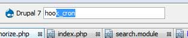
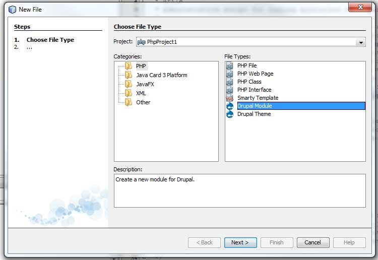
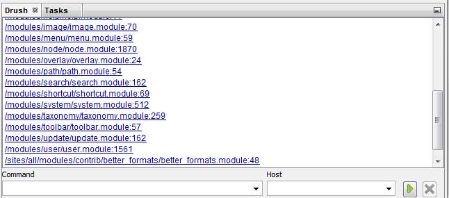
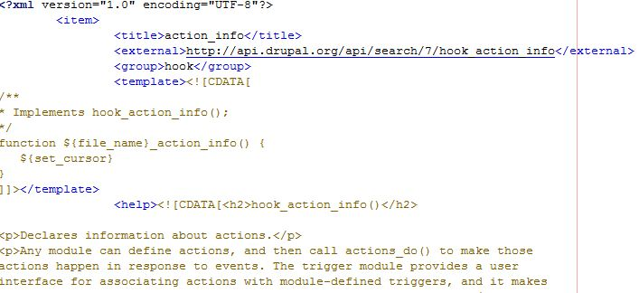
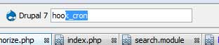
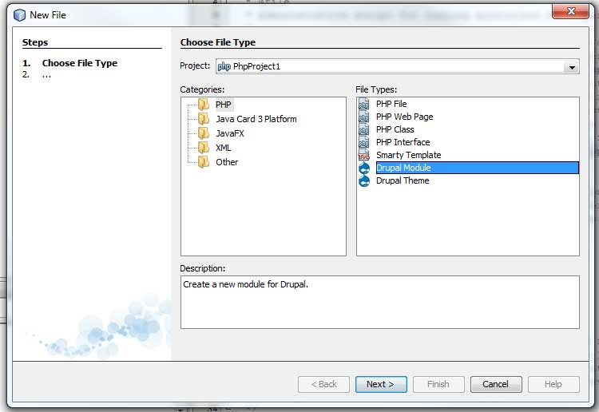
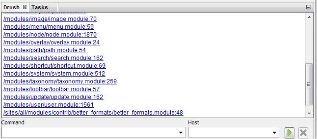
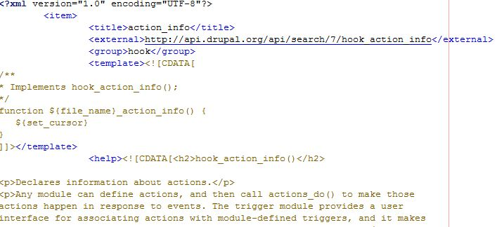

API Tree

Drupal Search Bar

Module And Template Creation

Drush Integration

Customization

The Netbeans Drupal Development Tool (NDDT) was developed to facilitate the development of Drupal modules and themes within the Netbeans IDE. This project us open sourced, licensees under the GPL public license (the same as Drupal!). The goal of this project is to become a group effort by Drupal developers to create a valuable item for our toolbox as we develop in our favorite platform.
The following shows a quick overview of the features currently offered in NDDT and updated information is always available .
API Tree
|
At the heart of NDDT is the API Tree window. This window, which can float or become docked to numerous areas of your workspace, provides quick access to all the hooks Drupal has to offer. At the top of the window is a quick lookup box, which provides a rapid way to find hooks and templating functions within Drupal. | |
Drupal Search Bar |
Drupal has a lot of functionality built in and remembering it all can be near impossible. The Drupal Search Bar appears at the top of the IDE and provides a quick path to the different topics and functions that Drupal has to offer. | |
Module And Template Creation |
With the module and template wizards, creating new modules and templates becomes a breeze. After only a couple of clicks you have the folder structure with all important files ready to go. | |
Drush Integration |
As any seasoned Drupal developer will tell you, Drush is a vital tool when building sites. NDDT offers integrations with Drush, saving you from having to switch from Netbeans to a terminal window. | |
Customization |
A simple yet powerful templating system allows you to add custom hooks, template functions and even code snippets. | |